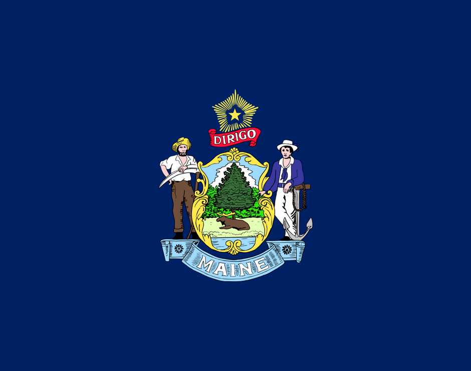
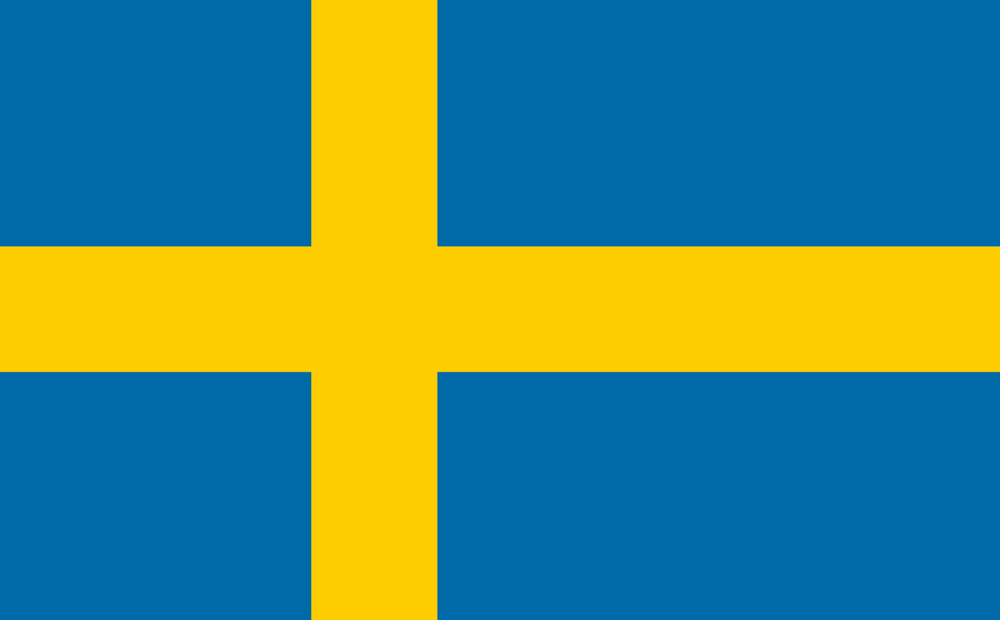
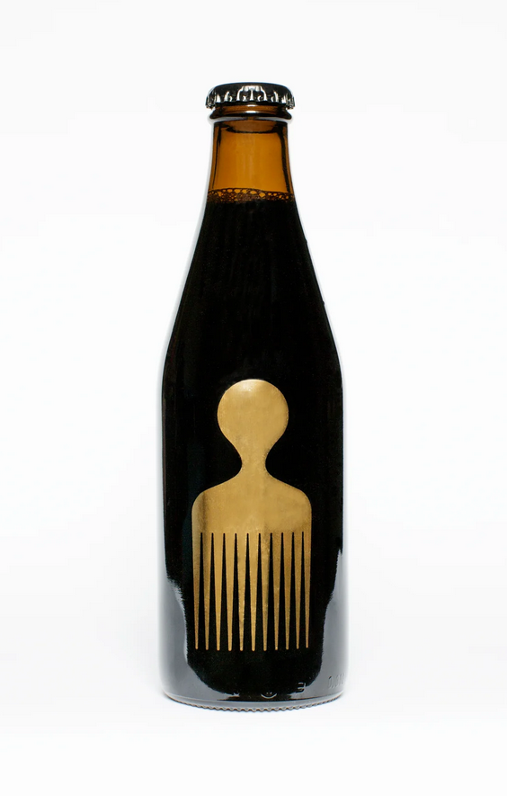
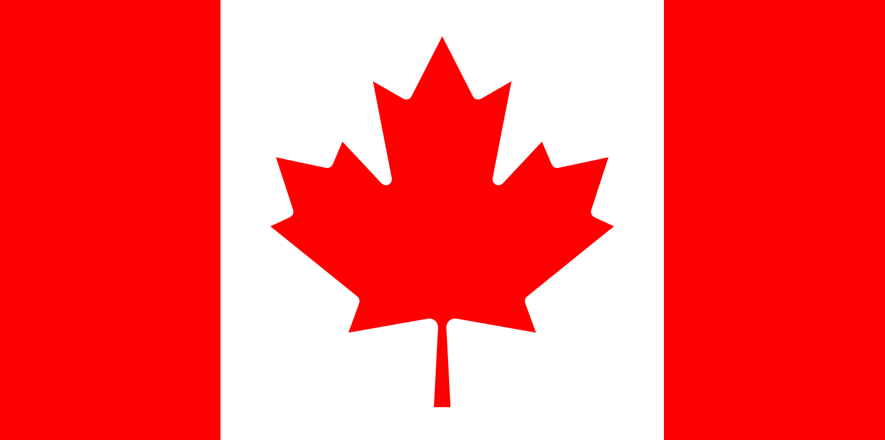
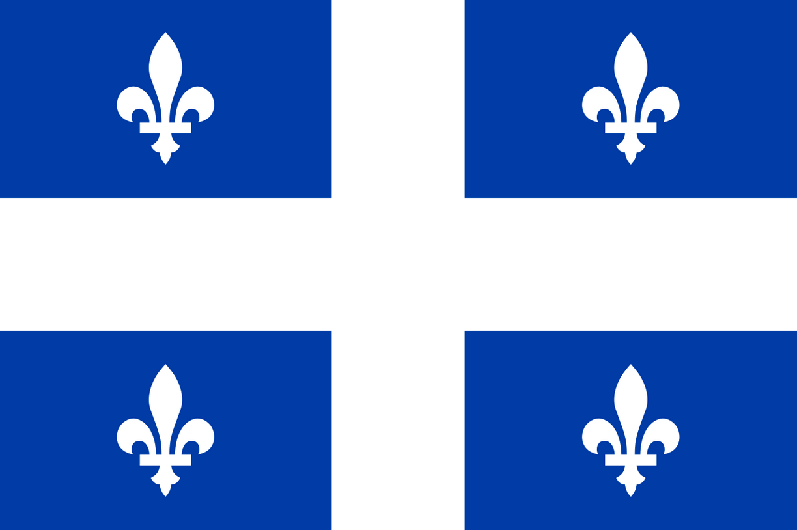
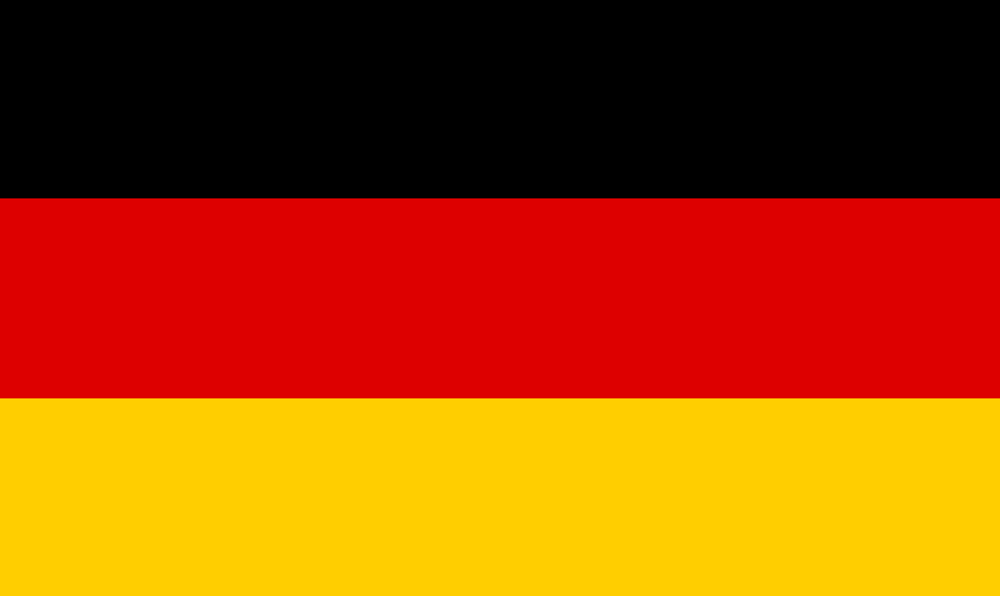
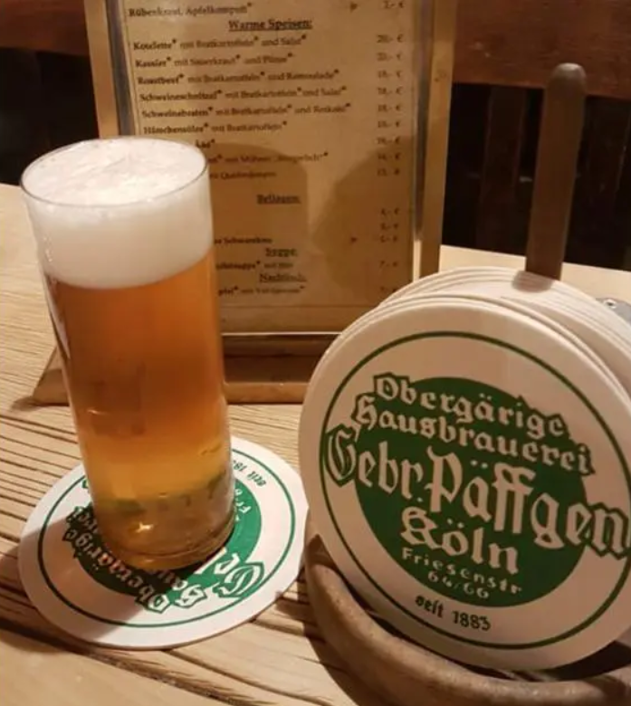
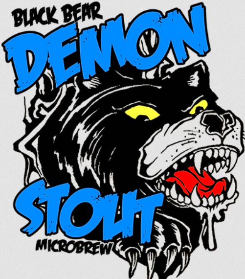

1. Allagash White 
Details: Allagash White features a refreshing balance of citrus and spice.
Wheat, coriander and Curaçao orange peel round out the flavor of this pale straw-colored, hazy beer.
- Brewery: Allagash Brewing Company
- Style: Wheat beer - Witbier/Blanche
- 5.2% ABV
- 13 IBU
- Headquarter: United States (Maine) 
- My rating: 5/5
- Global rating (Untappd): 3.75/5
website (external window)
2. Omnipollo Lorelei 
Details: Coconut Maple Toast Imperial Porter - brewed with toasted coconut and maple syrup.
- Brewery: Omnipollo
- Style: Porter - Imperial/Double
- 12.5% ABV
- 0 IBU
- Headquarter: Sweden (Stockholm)
- My rating: 5/5
- Global rating (Untappd): 4.32/5
website (external window)
3. Unibroue Blanche de Chambly 
Details: White of Chambly was the first bottle refermented ale produced by Unibroue.
It is brewed from a blend of pale barley malt, wheat malt and unmalted wheat, to which we blend selected spices and hops.
Blanche de Chambly is only partially filtered, retaining its natural cloud of yeast that is characteristic of the original white ales in the Middle Ages.
- Brewery: Unibroue
- Style: Wheat Beer - Witbier/Blanche
- 5% ABV
- 10 IBU
- Headquarter: Canada (Quebec) 
- My rating: 5/5
- Global rating (Untappd): 3.66/4
website (external window)
4. Päffgen Kölsch 
Details: Päffgen is the best Kölsch in Cologne.
- Brewery: Brauerei Päffgen
- Style: Kölsch
- 4.8% ABV
- 0 IBU
- Headquarter: Germany (Cologne)

- My rating: 5/5
- Global rating (Untappd): 3.59/5
website (external window)
5. Black Bear Demon Stout
Details: When in Orono ... don't pet the Bears! Demon Stout is a full and roasty American stout classic ale we've brewed since 2004.
- Brewery: Black Bear Brewery
- Style: Stout - American
- 5.1% ABV
- 0 IBU
- Headquarter: United States (Maine)
- My rating: 5/5
- Global rating (Untappd): 3.76/5
website (external window)